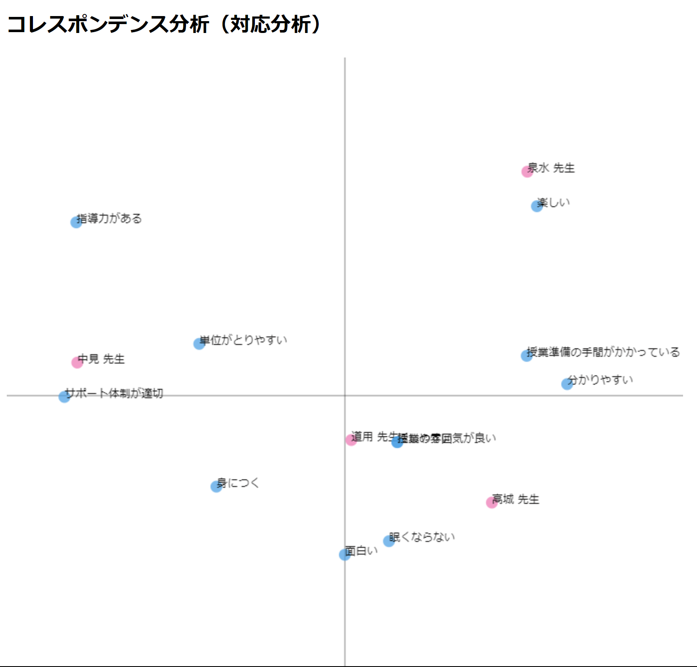

コレスポンデンス分析
散布図の画像

クロス集計表のcsvファイル
csvファイル
説明
散布図より、中見先生と「サポート体制が適切」という項目が近いことは、授業中のSAの人数が多いというイメージが反映されているのではないかと考えた。
道用先生は中央に位置しており、「授業中の雰囲気が良い」ということを筆頭に、幅広い項目に対応した授業運営を行っていると考えられる。
しかしながら、このデータの累積寄与率は8.66%であり、それぞれの先生から離れている項目は、データの取り方が悪いことが原因で離れてしまったと考える。
同じ班のメンバー
あみくら
ひで